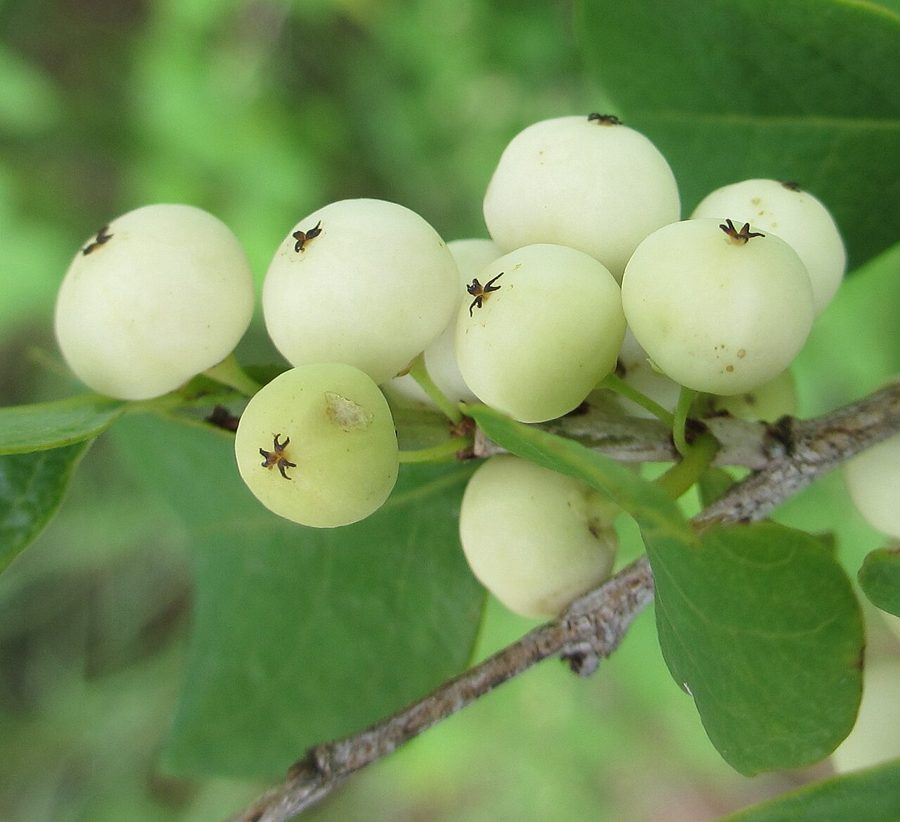

व्हाइट-बेरी बुशWhite-berry Bush
Flueggea virosa · Phyllanthaceae · FLR-0351

- Scientific name वैज्ञानिक नाम
- Flueggea virosa (Roxb. ex Willd.) Royle
- Family कुल
- Phyllanthaceae
- Hindi हिंदी
- व्हाइट-बेरी बुश
- Local names स्थानीय नाम
- white-berry bush, dalme, patta khajur, flueggea virosa, shikari jhad, safed ber
- Status here यहाँ की स्थिति
- native
- Movement आवागमन
- Resident, here all year
- Known from कहाँ दर्ज
- Others have published records from the wider Awadh–Purvanchal plain, none yet from Basti–Ayodhya अवध–पूर्वांचल से दूसरों के प्रकाशित अभिलेख, बस्ती–अयोध्या से अभी नहीं
- IUCN IUCN
- not evaluated
- Review समीक्षा
- not yet reviewed
When to look कब देखें
Expected mainly in April, May, June, July, August, September, October, November. मुख्यतः अप्रैल, मई, जून, जुलाई, अगस्त, सितंबर, अक्टूबर, नवंबर में अपेक्षित।
Uses and possibilities उपयोग और संभावनाएँ
“Traditional medicine” means a documented traditional use, not a claim that it works. Nothing on this page is medical advice.
Drawn from the documented uses in the profile below, where each is labelled traditional, current or a research lead. All uses →
व्हाइट-बेरी बुश / White-berry Bush
Flueggea virosa (Roxb. ex Willd.) Royle — Phyllanthaceae
व्हाइट-बेरी बुश — जंगलों के किनारों और बंजर जमीनों पर पाई जाने वाली एक बहुवर्षीय, घनी और सफेद मोतियों जैसे फलों वाली झाड़ी। इसे स्थानीय भाषा में 'दालमे' या 'पत्ता खजूर' भी कहते हैं। बरसात के अंत में इस पर सफेद, गोल और रसीले बेर जैसे फल भारी संख्या में लद जाते हैं, जिन्हें ग्रामीण बच्चे और जंगली पक्षी बड़े चाव से खाते हैं।
Quick Identification त्वरित पहचान
| Feature | Description |
|---|---|
| Habit | Much-branched, erect, deciduous woody shrub or small tree |
| Branches | Slender, angular when young, smooth greyish-brown with occasional thorn-like spine tips |
| Leaves | Alternate, elliptic to obovate, thin, smooth, pale green, variable in shape |
| Flowers | Tiny, unisexual (dioecious), greenish-yellow in dense axillary fascicles |
| Fruit | Distinctive, fleshy, globose, snow-white pearl-like berry containing small seeds |
Field tip: Look along canal banks or scrub thickets in late summer for a thornless or spine-tipped bushy shrub loaded with thousands of small, snow-white, pearl-like juicy berries.
हिंदी — कैसे पहचानें: सफेद मोतियों जैसे छोटे गोल फल, पतली कोमल टहनियां, और पत्तों के पास नन्हे हरे-पीले फूलों के गुच्छे।
Morphology आकारिकी
Shrub description: Large, erect, much-branched, deciduous woody shrub or small crooked tree. Bark smooth, thin, grey or reddish-brown, exfoliating in tiny fibrous flakes; branchlets slender, angular, green, occasionally spine-scent with stunted blunt twigs. Leaves alternate, distichous, variable in shape, obovate, elliptic or suborbicular, apex rounded or obtuse, base cuneate, thin, chartaceous, glabrous, dark green above, glaucous beneath; petiole slender. Flowers dioecious, minute, greenish-yellow, sweet-scented. Male flowers very numerous in dense axillary fascicles; sepals five, stamens five, alternating with disk glands. Female flowers solitary or two to five together in axils on slender pedicels; ovary globose, three-celled, styles three, deeply bifid. Fruit a depressed-globose, fleshy, snow-white berry, containing three to six small triangular seeds.
हिंदी: यह एक बहुवर्षीय घनी झाड़ी या छोटा पेड़ है।
Behaviour & Ecology व्यवहार और पारिस्थितिकी
- Dioecious Sex Ratio: Male and female flowers occur on separate individual shrubs, ensuring obligate cross-pollination.
- Avian Frugivory Frenzy: Snow-white ripe berries stand out conspicuously against green foliage, attracting flocks of bulbuls, babblers, and mynas.
- Drought Resilience: Drops its foliage during severe winter and pre-monsoon dry spells, flushing rapidly with fresh green leaves after rain.
- Coppicing Vigor: Resprouts with great vigor from the root collar if cut back by wood collectors or goats.
हिंदी: नर और मादा फूल अलग-अलग पौधों पर होते हैं। इसके सफेद फल पक्षियों को दूर से दिखाई देते हैं और वे इन्हें खाकर बीज फैलाते हैं।
Life Cycle / Phenology जीवन चक्र
- Spring Leaf Flush: Fresh tender green leaves appear in April accompanied by minute sweet-scented flower clusters.
- Flowering Window: Blossoms from April through August during pre-monsoon and monsoon heat.
- Fruit Maturation: Green berries swell rapidly, turning translucent snow-white and juicy from July to October.
- Winter Rest: Leaves turn yellowish and fall in December; branches remain bare during cold dry winter weeks.
हिंदी: अप्रैल में नई पत्तियां और फूल आते हैं। बरसात में सफेद फल पकते हैं और सर्दियों में पत्तियां झड़ जाती हैं।
Associated Species / Interactions संबंधित प्रजातियाँ
- Primary Bird Frugivores: Berries eaten by red-vented bulbuls, common mynas, and jungle babblers, often growing near neem trees.
- Pollinator Associates: Small solitary bees, sweat bees (Lasioglossum), and hoverflies visit male flowers for pollen and nectar.
- Bat Dispersal: Fruit bats (Cynopterus) visit fruiting shrubs at night to consume berries.
हिंदी: मैना, बुलबुल और चमगादड़ इसके सफेद फल खाते हैं। नन्हीं मधुमक्खियां इसके फूलों पर आती हैं।
Pests and Diseases कीट और रोग
- Leaf Beetles: Chrysomelid flea beetles chew small holes in tender spring leaves.
- Stem Borers: Cerambycid beetle larvae bore into older dead or weakened branches.
- Leaf Spot: Brown fungal leaf spots occur on dense shaded foliage during humid monsoon weeks.
हिंदी: कभी-कभी भृंग पत्तों में छोटे छेद कर देते हैं और अधिक नमी में पत्तों पर फफूंद के धब्बे पड़ जाते हैं।
Agricultural / Human Relevance कृषि प्रासंगिकता
- Wild Edible Fruit: The sweet, slightly astringent white berries are commonly eaten by rural children and cowherds in Awadh.
- Soil Stabilization: Fast-growing root system stabilizes degraded ravine slopes and erosion-prone canal banks.
- Traditional Medicine: Bark and roots are used in traditional medicine for intestinal ailments, fevers, and as a fish poison.
हिंदी: इसके सफेद रसीले फल गांव के बच्चे और चरवाहे खाते हैं। नहर के किनारों की मिट्टी को बहने से रोकने में यह मददगार है।
Expected Locally स्थानीय रूप से अपेक्षित
Not a field record. Written from published accounts for eastern Uttar Pradesh. No confirmed local sighting yet — if you have seen it, that is what the atlas needs.
अभी तक स्थानीय पुष्टि नहीं। यह विवरण प्रकाशित स्रोतों से है, किसी अवलोकन से नहीं।
Expected in scrubby wastelands, village hedgerows, and garden borders across Basti, Ayodhya, and neighbouring Awadh districts. GBIF holds published records from the wider Awadh–Purvanchal plain, none yet from Basti–Ayodhya. To confirm this species for the Atlas, provide a clear photograph showing flowers, leaves, and habit, along with date, time, and specific location.
Distribution वितरण
Global range: Widespread across tropical Africa, Madagascar, South Asia, East Asia, Southeast Asia, and northern Australia.
In India: Common throughout deciduous forests, scrub zones, and plains from the Siwalik foothills to southern India.
In Uttar Pradesh: Recorded across Gangetic scrublands and riverine ravines from Gorakhpur, Varanasi, Lucknow, and Mirzapur.
In Basti district / eastern UP: Expected along canal verges, Kuwana river embankments, and village scrub wastelands throughout Basti and Ayodhya.
हिंदी: यह पौधा अफ्रीका, भारत, दक्षिण-पूर्व एशिया और ऑस्ट्रेलिया में पाया जाता है। उत्तर प्रदेश के झाड़ीदार इलाकों में यह बहुत आम है।
Research Questions शोध प्रश्न
- What is the sex ratio of male to female Flueggea virosa shrubs in wild Awadh populations? / अवध के जंगलों में इस झाड़ी के नर और मादा पौधों का क्या अनुपात है?
- How does seed passage through avian digestive tracts affect germination percentage? / पक्षियों के पेट से निकलने के बाद बीजों के अंकुरण में कितनी वृद्धि होती है?
- What is the nutritional sugar and moisture content of the snow-white berries? / इसके सफेद फलों में शर्करा और पानी की कितनी मात्रा पाई जाती है?
- Which native bee species is the most efficient pollen vector between separate male and female shrubs? / नर और मादा पौधों के बीच पराग ले जाने में कौन सी मधुमक्खी सबसे ज्यादा कुशल है?
- How does seasonal drought affect dioecious flower abortion rates during the pre-monsoon period? / मानसून से पहले तेज गर्मी में फूल झड़ने की दर पर क्या असर पड़ता है?
Similar Species मिलती-जुलती प्रजातियाँ
| Species | How to tell apart | हिंदी |
|---|---|---|
| Flueggea leucopyrus | Densely armed with stiff, sharp, spine-tipped branchlets; leaves much smaller | कांटों जैसी टहनियों वाली झाड़ी, काफी छोटे पत्ते |
| Phyllanthus reticulatus | Scrambling shrub; berries ripen purple-black rather than snow-white | फैलने वाली झाड़ी, काले-जामुनी फल |
| Breynia vitis-idaea | Flowers and small red-to-purple berries borne on slender branchlets | लाल या जामुनी फल, पतली टहनियां |
Field rule: A deciduous shrub with thin obovate leaves bearing clusters of small, fleshy, snow-white pearl-like berries on female plants identifies Flueggea virosa.
Taxonomy & Classification वर्गीकरण
Original description. Described by William Roxburgh and Carl Ludwig Willdenow, and validly transferred by John Forbes Royle in 1836 as Flueggea virosa in Illustrations of the Botany and Other Branches of the Natural History of the Himalayan Mountains, vol. 9, p. 328.
Subspecies. Monotypic across northern India; formerly placed in Securinega or Phyllanthus.
Family and order placement. Placed in the family Phyllanthaceae, subfamily Phyllanthoideae, in the order Malpighiales.
IUCN status rationale. Not evaluated by the IUCN; widespread, common, and ecologically secure across tropical regions.
हिंदी: जॉन फोर्ब्स रॉयले ने 1836 में इसका वैज्ञानिक नाम दिया था। यह फाइलेन्थेसी कुल का पौधा है।
Photo Gallery फोटो गैलरी
No photos yet — add field photos to media/species/white_berry_bush/ and run node scripts/sync_photos.js.
Photos needed आवश्यक फोटो
- [ ] Cluster of snow-white pearl-like ripe berries on branch (टहनी पर लगे सफेद मोतियों जैसे रसीले फल)
- [ ] Fascicles of tiny greenish-yellow male flowers in leaf axils (पत्तों के पास नन्हे हरे-पीले फूलों के गुच्छे)
- [ ] Bushy habit growing along a scrub wasteland boundary (झाड़ीदार बंजर जमीन पर उगी पूरी झाड़ी)
References संदर्भ
- Royle, J.F. (1836). Illustrations of the Botany and Other Branches of the Natural History of the Himalayan Mountains, vol. 9, p. 328. London.
- Duthie, J.F. (1915). Flora of the Upper Gangetic Plain and of the Adjacent Siwalik and Sub-Himalayan Tracts, vol. 3, p. 86. Government of India, Calcutta.
- Hooker, J.D. (1887). The Flora of British India, vol. 5, p. 328. L. Reeve & Co., London.
- Brandis, D. (1906). Indian Trees: An Account of Trees, Shrubs, Woody Climbers, Bamboos and Palms, p. 569. Archibald Constable & Co., London.
- Kirtikar, K.R. & Basu, B.D. (1935). Indian Medicinal Plants, vol. 3, p. 2226. Lalit Mohan Basu, Allahabad.
- GBIF Occurrence Data — Flueggea virosa (Roxb. ex Willd.) Royle, India (2025).
Source file: species/flora/shrubs/white_berry_bush.md